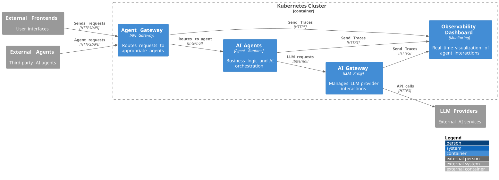

Building Block View
Overview
The Agentic Layer architecture currently consists of three building blocks that work together to provide AI orchestration capabilities:
-
Agent Runtime: The execution environment for AI agents, including the Agent Gateway for request routing and the Agent Runtime Operator for lifecycle management
-
AI Gateway: The abstraction layer for LLM provider interactions, providing unified access, security, and intelligent routing
-
Observability Dashboard: A simple dashboards that visualizes the interaction between agents and tools in real time
Overall Request Flow
The following diagram shows how these building blocks interact during typical request processing:

This flow demonstrates the request processing pipeline:
-
External systems (Frontends and Agents) send requests via HTTPS/API
-
Agent Gateway receives and routes requests to appropriate agents
-
AI Agents process business logic and make LLM requests
-
AI Gateway handles LLM provider interactions with security and routing
-
Observability Dashboard collects telemetry and provides real-time visualization
-
LLM Providers process AI requests and return results
Agent Runtime
The Agent Runtime building block provides the execution environment and management infrastructure for AI agents within the Kubernetes cluster.
Components
-
Agent Runtime Operator: Kubernetes operator that manages agent lifecycles, configurations, and deployments
-
Agent Gateway: API gateway that routes incoming requests to agents and maps external APIs to internal agent interfaces
-
AI Agents: Individual agent instances that execute business logic and orchestrate AI operations
Agent Runtime Responsibilities
Agent Runtime Operator serves as the control plane for agent management:
-
Registers and configures agents with the Agent Gateway
-
Manages agent lifecycles, scaling, and resource allocation
-
Provides Kubernetes-native deployment and operational patterns
Agent Gateway acts as the request entry point:
-
Routes requests to appropriate agents based on capabilities and load
-
Maps external APIs to internal agent interfaces
-
Provides load balancing and health checking for agent instances
AI Agents execute the core business logic:
-
Process domain-specific workflows and business rules
-
Orchestrate interactions with external systems and services
-
Make intelligent decisions about when and how to use LLM capabilities
AI Gateway
The AI Gateway building block abstracts interactions with multiple LLM providers, providing a unified interface with built-in security, monitoring, and intelligent routing capabilities.
AI Gateway Components and Flow
The AI Gateway processes requests through a secure, monitored pipeline:
Access Token Management handles authentication:
-
Manages API keys and authentication tokens for different LLM providers
-
Provides secure credential storage and rotation capabilities
-
Ensures proper authentication for all external AI service calls
AI Guardrails provides security and safety controls:
-
Content filtering and safety checks for both input and output
-
Policy enforcement based on organizational security requirements
-
Prevents malicious or inappropriate content from reaching LLM providers
Metrics component enables comprehensive monitoring:
-
Collects usage statistics, performance metrics, and cost tracking
-
Exports telemetry data to observability infrastructure
-
Provides insights into AI usage patterns and provider performance
Model Router manages intelligent LLM routing:
-
Routes requests to appropriate LLM providers based on capabilities, cost, and availability
-
Provides failover and load balancing across multiple providers